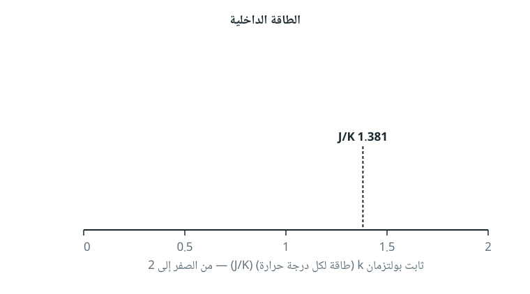

الطاقة الداخلية
Internal Energy
مجموع الطاقات الحركية والكامنة لجزيئات المادة، ولا تشمل حركة المادة ككل. بدائية ديناميكية حرارية تُحسب تغيّراتها فقط.
الطاقة الداخلية U هي مجموع الطاقة الحركية والكامنة للمكوّنات: الذرات والأيونات والجزيئات. لا تشمل الطاقة الناتجة عن موقع المادة أو حركتها ككل. يقول Smith وآخرون إن الطاقة الداخلية ليس لها تعريف ديناميكي حراري مختصر، وإنها بدائية ديناميكية حرارية لا تُقاس مباشرة — لا توجد أجهزة قياس للطاقة الداخلية — وأن القيم المطلقة مجهولة، لكن هذا ليس عيباً لأن التحليل الحراري يحتاج التغيّرات فقط. وهي دالة حالة وخاصية شاملة، ووحدتها الجول؛ والطاقة الداخلية المولية خاصية مكثفة.
كيف تعمل الظاهرة؟
الطاقة الداخلية U مجموع الطاقة الحركية والكامنة لمكوّنات المادة: الذرات والأيونات والجزيئات. الطاقة الحركية تأتي من انتقال الجزيئات ودورانها واهتزازها، والكامنة من قوى الترابط بينها. ولا تشمل الطاقة الناتجة عن موقع المادة في مجال جاذبية أو حركتها ككل، لأن هذين حدّان خارجيان يُضافان إلى الطاقة الكلية لا إلى الداخلية.
العلاقة بالأرقام
وحدتها الجول (J)، وهي خاصية شاملة تتناسب مع كمية المادة، والطاقة الداخلية المولية خاصية مكثفة وحدتها J/mol. وللغاز المثالي تعتمد U على درجة الحرارة وحدها، وΔU = n·C_V·ΔT. ولأن القيم المطلقة مجهولة، تُحسب التغيّرات ΔU فقط من القانون الأول: ΔU = Q + W للنظام المغلق.
مفاهيم متقاربة
تختلف عن الحرارة والشغل: هذان طاقة في عبور عبر الحدود، والطاقة الداخلية خاصية تُخزَّن في النظام. وتختلف عن الإنثالبي في أن الإنثالبي يضيف حاصل ضرب الضغط في الحجم، فيناسب العمليات عند ضغط ثابت. وتختلف عن الطاقة الحركية للمادة ككل: جسم يتحرك بسرعة عالية طاقته الحركية كبيرة، لكن طاقته الداخلية لا تتغير بسبب حركته الجماعية.
حدود التطبيق
لا يوجد تعريف ديناميكي حراري مختصر للطاقة الداخلية، وهي بدائية ديناميكية حرارية لا تُقاس مباشرة، ولا توجد أجهزة قياس لها. والقيم المطلقة مجهولة، لكن هذا ليس عيباً لأن التحليل الحراري يحتاج التغيّرات فقط. ولا تشمل U الطاقة النووية أو طاقة الراحة الكتلية mc² في الديناميكا الحرارية الكلاسيكية.

| الكمية | القيمة | المصدر |
|---|---|---|
| ثابت بولتزمان k (طاقة لكل درجة حرارة) | 1.380 649×10⁻²³ J/K | [3] |
المصادر
- 1 Introduction to Chemical Engineering Thermodynamics, 8th ed. — McGraw-Hill (2018). openlibrary.org/api/books?bibkeys=ISBN:9781259696527&format=json&jscmd=data · اطُّلع عليه 2026-11-21
- 2 Atkins' Physical Chemistry, 11th ed. — Oxford University Press (2018). · اطُّلع عليه 2026-11-21
- 3 SI base unit: kelvin (K) — the 2018 revision of the SI — BIPM — Bureau International des Poids et Mesures (2019). www.bipm.org/en/si-base-units/kelvin · اطُّلع عليه 2026-11-21
- 4 NISTIR 5078: Thermodynamic Properties of Water — Tabulation from the IAPWS Formulation 1995 — NIST — National Institute of Standards and Technology (1998). nvlpubs.nist.gov/nistpubs/Legacy/IR/nistir5078.pdf · اطُّلع عليه 2026-11-21
استشهد بهذا المصطلح
الصيغتان مبنيتان من بيانات الصفحة نفسها: العنوان والتاريخ ورابط النسخة المنشورة.
الطاقة الداخلية — Internal Energy. (2026). ديوان المعرفة — انفراد. https://infiradev.com/diwan/terms/term-internal-energy.html
@misc{term-internal-energy2026,
title = {الطاقة الداخلية},
titleaddon = {Internal Energy},
howpublished = {{ديوان المعرفة — انفراد} — مرجع علمي عربي},
year = {2026},
url = {https://infiradev.com/diwan/terms/term-internal-energy.html},
urldate = {2026-11-25},
note = {مراجعة علمية: فحص التسليم — مراجعة المدير}
}
راجعه: فحص التسليم — مراجعة المدير · 2026-11-25 · آخر تحديث 2026-11-21